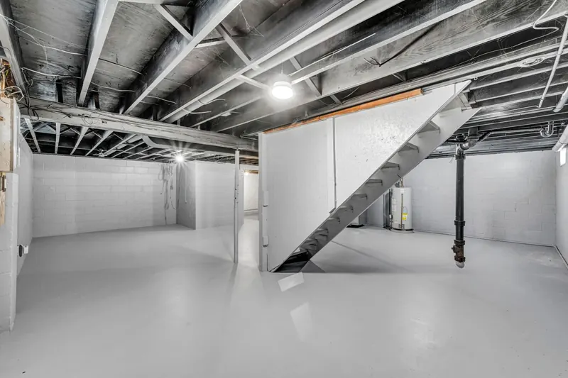

Quick Answers
Why does the rim joist leak so much air?
Because it is a stack of connections. Building Science Corporation says joints between parts, not open wall surfaces, cause most air leakage, and it names the rim joist one of the worst. The sill plate rests on masonry, joists land on the rim, and wires and pipes pass through it, each leaving a gap.
How thick should closed cell be at the rim?
About 1.5 to 2 inches. The figure DOE gives for band joists in its crawl space guide is 1.5 inches sprayed directly on the wood, and a building science forum reply suggests stopping near 2 inches on interior rims. One manufacturer's data sheet shows a single inch already measures 0.91 perm, a Class II vapor retarder.
Can rim joist foam stay exposed in an unfinished basement?
Usually, if it stays thin. DOE says rim foam can skip the thermal barrier at 3.25 inches or less when the space is not habitable. The 2021 IRC exemption also limits density to 0.5 to 2.0 pounds per cubic foot, with flame spread of 25 or less and smoke of 450 or less.
Signs Your Rim Joist Needs Sealing
- Cold drafts along first floor baseboards on windy winter days.
- Fiberglass in the rim bays that has gone dark, dusty or moldy.
- Daylight, cobwebs or a breeze at the top of the foundation wall.
- A basement that feels raw in winter and musty in summer.
- Bare block or poured walls you plan to frame and finish.
How Rim Joist and Basement Wall Insulation Works
Fibrous insulation fails at the rim for a simple reason. The inside face of the rim board runs cold in winter, and Building Science Corporation warns that batts against it invite condensation and mold, because indoor air passes straight through the fiber to the cold wood.

Pull the old batts
Whatever is stuffed in the bays comes out, and we look at the wood behind it for staining, rot or insect damage before covering anything.
Foam each bay
Closed cell covers the rim board, the sill plate and its joint with the foundation, plus every wire, pipe and vent through the band. Where termite pressure exists, DOE advises a 3 inch inspection gap, which we leave along the masonry.
Insulate the basement walls
Tennessee's code asks for R-10 continuous or R-13 cavity insulation on basement walls. At R-6 or more per inch, about 2 inches of closed cell sprayed on the masonry clears R-10. DOE's spray foam guide prefers closed cell below grade and rules out open cell there.
Plan the finish
Foam on walls of a finished basement needs a thermal barrier, usually 1/2 inch gypsum board under IRC R316.4. If you plan to frame later, we keep the foam flat enough for studs to sit tight against it.
Rim Joist and Basement Wall Cost in Knoxville
Price follows the linear feet of exposed rim, the square feet of basement wall, and access. Ductwork and pipes crowding the bays, old batt removal and drywall afterward all add time. These national figures were checked in October 2026 and are not our prices.
| Job | National range | Source |
|---|---|---|
| Rim joist spray foam, professional job | $500 to $1,800 | LatestCost |
| Rim joist foam by surface area | $3 to $8 per sq ft | LatestCost |
| Closed cell on basement walls, per sq ft sprayed | $3.00 to $5.00 | HomeGuide (2026) |
LatestCost's range assumes about 2 inches of closed cell. For walls, 800 square feet of basement masonry at HomeGuide's closed cell range works out to roughly $2,400 to $4,000. More ranges are in our spray foam cost guide, and you can call (865) 564-7823 to schedule a free estimate with real measurements.
Basements and Rims in East Tennessee
Knoxville sits in the Great Appalachian Valley, a landscape of long ridges and broad valleys, with riverfront ground near 800 feet and West Knoxville hilltops a little over 1,000. Houses built into those slopes often have daylight basements, partly buried and partly exposed, and their rim joists face weather on the downhill side.
The band is a bigger target than it looks. DOE notes that walls and rim joists together make up more than 40 percent of a home's envelope area.
Finishing a basement inside Knoxville city limits falls under the 2024 IRC and the 2018 IECC, so check with the city's permit office before the framing goes up. Summer humidity also matters here: cool masonry below grade collects moisture, which is why we put foam against it instead of a stud cavity of loose fiber.
What the Free Rim Joist Estimate Includes
- Linear feet of exposed rim, plus basement wall area if walls are in scope.
- A look at what fills the bays now and the condition of the wood behind it.
- Every penetration through the band, such as dryer vents, hose bibs and gas lines.
- Your plans for finishing, so the price includes any thermal barrier.
- A written price for the rim alone and for rim plus walls.
Rim Joist and Basement Wall FAQ
Related Services
- Closed cell spray foam: the dense, moisture-resistant foam behind every rim joist job we do.
- Crawl space insulation: the same band joist sealing, plus foam on crawl walls.
- Air sealing: the attic side of the leakage problem, sealed to pair with the bottom of the house.
Where We Do This Most
- Farragut: hilly ground between Blackoak Ridge and Fort Loudoun Lake puts many homes over sloped basements.
- West Knoxville: hilltop lots a little over 1,000 feet step down into walkout and daylight basements.
- Oak Ridge: five parallel ridges run through the city, and houses on their flanks often sit on stepped foundations.
- Karns: homes climbing the sides of Beaver Ridge and Copper Ridge often have a basement on the low side.
- Sevierville: foothill lots where the Smokies meet the valley lend themselves to lower levels built into the grade.
Seal the Band Before You Finish the Basement
The rim is a small, affordable job that is easiest to do while the basement is still open. Call (865) 564-7823 for a free estimate and we will measure the band and walls and write up both options.